Undergraduate Researcher · DGIST
AI researcher working on multimodal data.
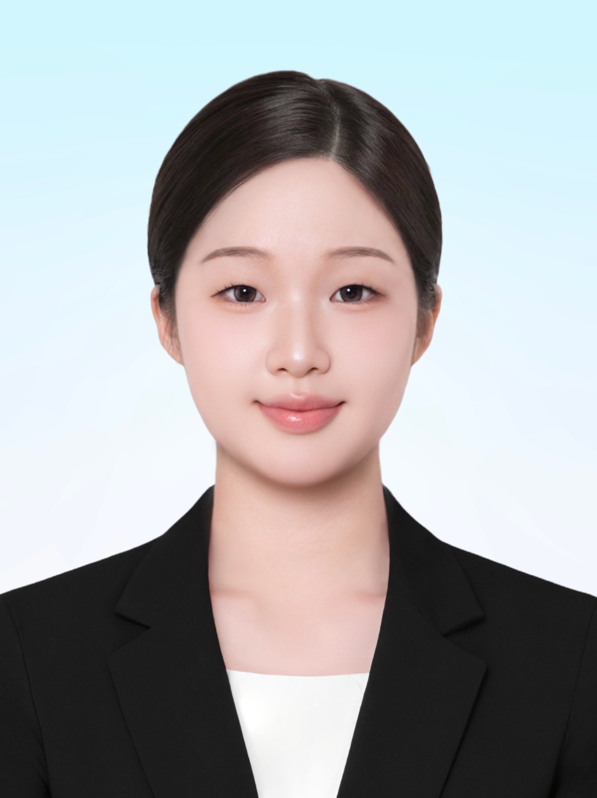
I'm an undergraduate at DGIST, double-majoring in Computer Engineering and Life Sciences, graduating February 2027. For two and a half years I've researched multimodal medical AI in DGIST's MBIS Lab under Professor Jaeyoun Hwang — work that extended to the Woo Lab at Massachusetts General Hospital and Harvard Medical School under Professor Jonghye Woo, building cross-attention models for Alzheimer's diagnosis and diffusion models for brain tumor synthesis.
Outside the lab, I've been a Ministry of SMEs K-Global Correspondent, a DGIST SNS Supporter, and team lead of the open-source team in Samsung Electronics' Open Tech Companions program. I also co-founded a startup that won gold at the GCSC International Startup Camp.
News
Background
| DGIST | Computer Engineering & Life Sciences, Double Major (B.S.) | Feb 2023 – Feb 2027 (expected) |
| UC Berkeley | Summer Student | Jun 2023 – Aug 2023 |
| Korea University | Exchange Student | Mar 2026 – Jun 2026 |
Research
K. Park et al. — MICCAI Workshop (DGM4MICCAI) 2026
DAMAN is a subject-specific multimodal latent diffusion framework that synthesizes high-fidelity brain tumors across MRI modalities. It uses disease-aware attention — quality-aware gating and voxel-level, lesion-specific spatial attention over modality-specific 3D VQ-GAN latents — to adaptively fuse cross-modal features, plus a hard-inpainting loop that preserves the background at every diffusion step. On the LUMIERE glioblastoma dataset, it reaches a PSNR of 20.27 dB and SSIM of 0.919 on T1-post, with a 100% valid generation rate versus 50–56% for single-modal baselines.
Also presenting as an oral talk at MICCAI 2026 in Strasbourg, France (October 1).
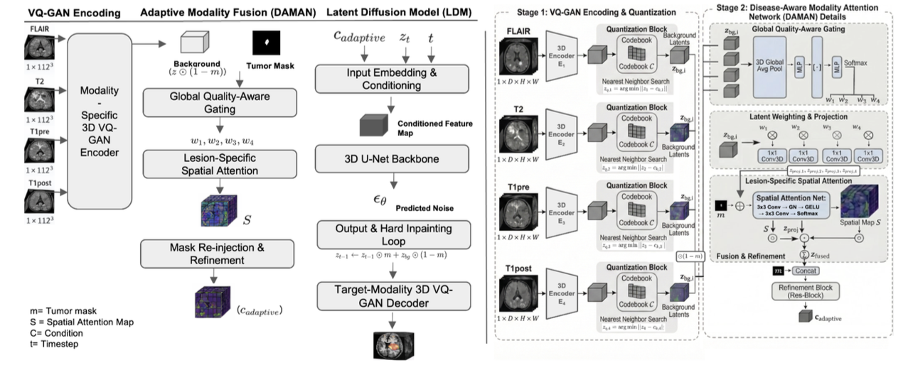
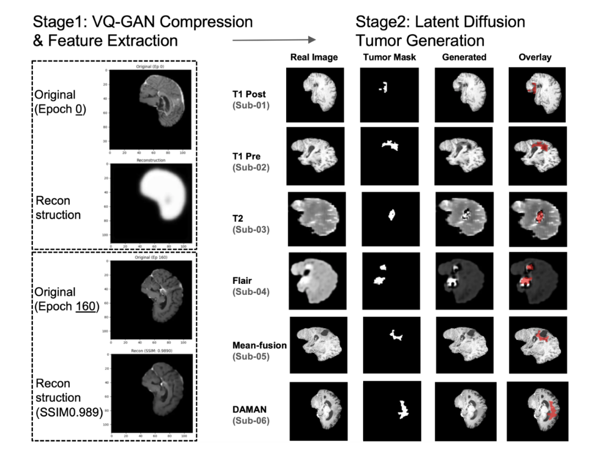
Research project
Bidirectional cross-attention network fusing MRI and PET for Alzheimer's diagnosis.
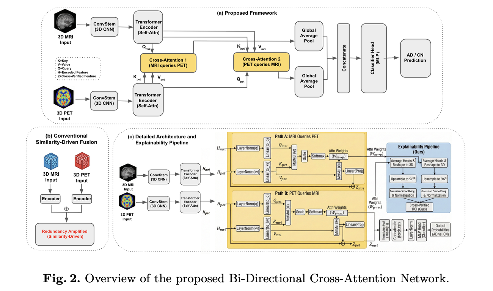
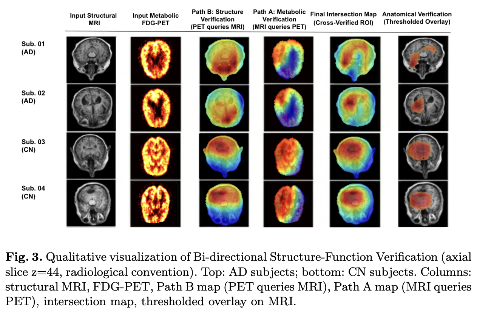
Experience
Advisor: Prof. Jonghye Woo, Associate Professor of Radiology
Advisor: Prof. Jaeyoun Hwang
Advisor: Prof. Jin Soo Seo
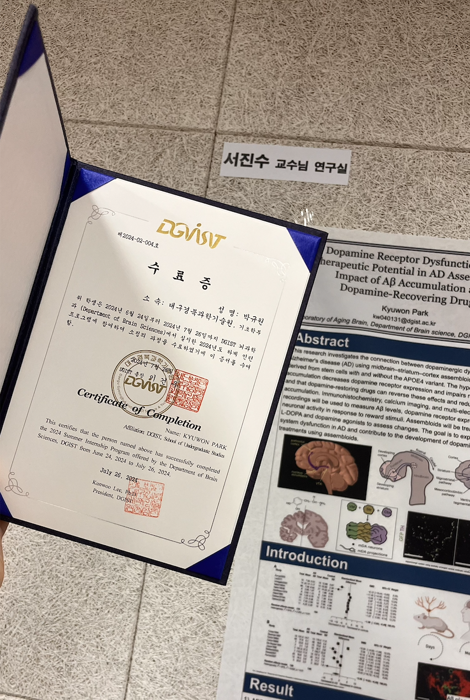
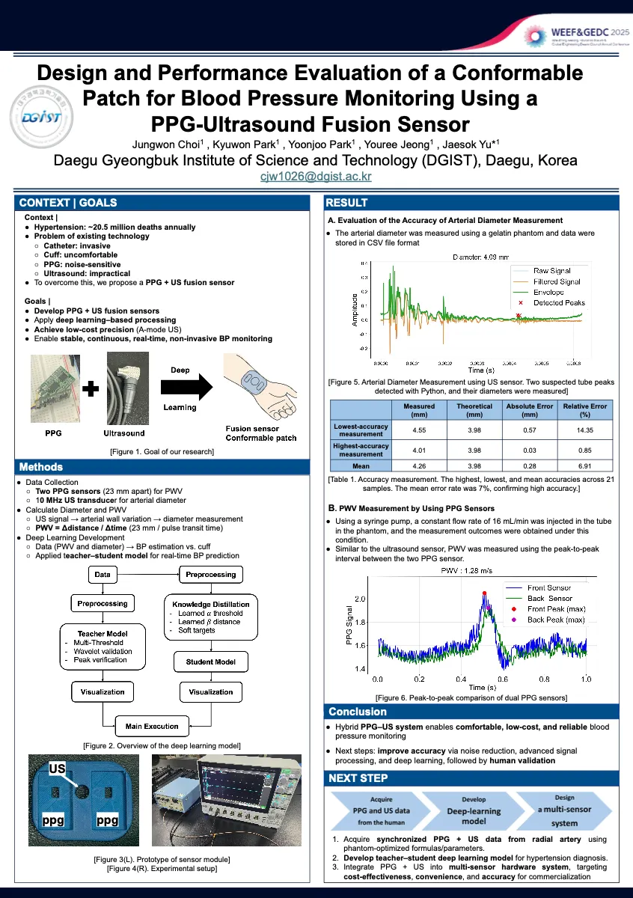
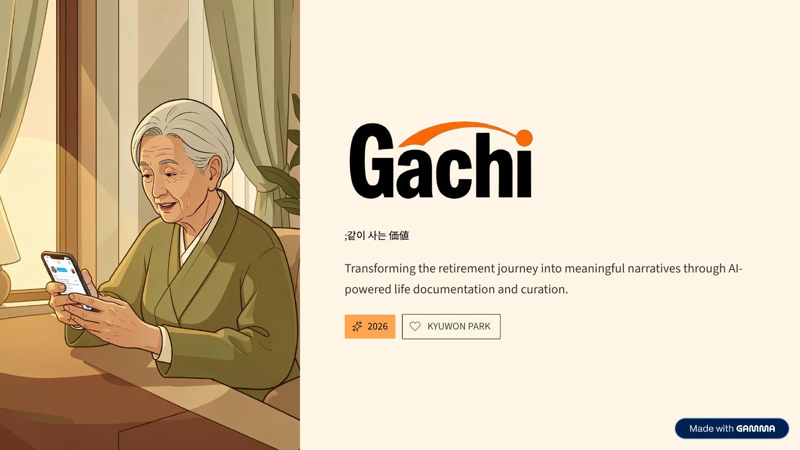
같이 사는 가치 — transforming the retirement journey into meaningful narratives through AI-powered life documentation.
Gachi lets retirees speak their life story a few minutes a day and turns it into a curated, editable memoir through AI. The project grew out of the GCSC International Startup Camp, where our team won gold and was selected for GCSC's seeding (funding) program. My role: AI planning & development — I built the MVP myself, including the voice-recording UI and the transcription + memoir-generation pipeline.
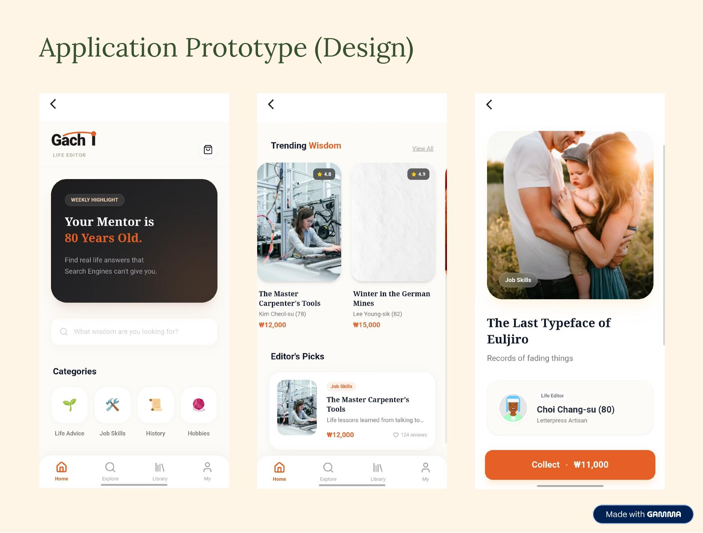
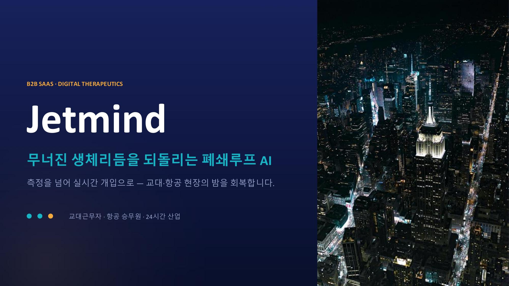
무너진 생체리듬을 되돌리는 폐쇄루프 AI — a closed-loop AI that restores broken circadian rhythms for shift workers and flight crew.
Jetmind reads data from wearables people already own to predict circadian rhythm and prescribe exactly when to get light, take melatonin, or sleep — built for shift workers and flight crew. The project is affiliated with the Four S&T Institutes' Startup League (DGIST, GIST, KAIST, UNIST) and has received funding. My role: AI development lead — building the closed-loop LSTM/Transformer and reinforcement-learning engine.
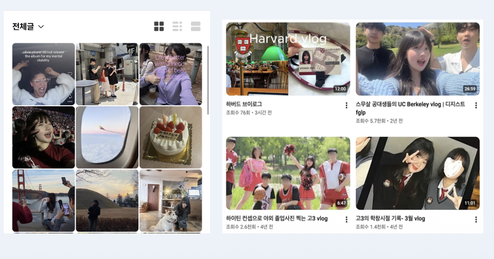
Skills
Gallery
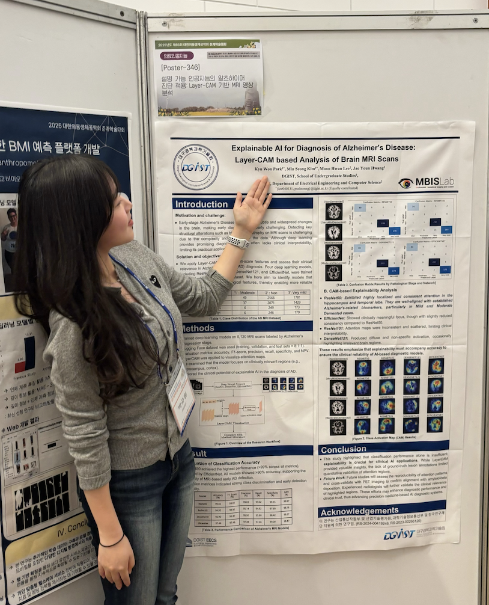
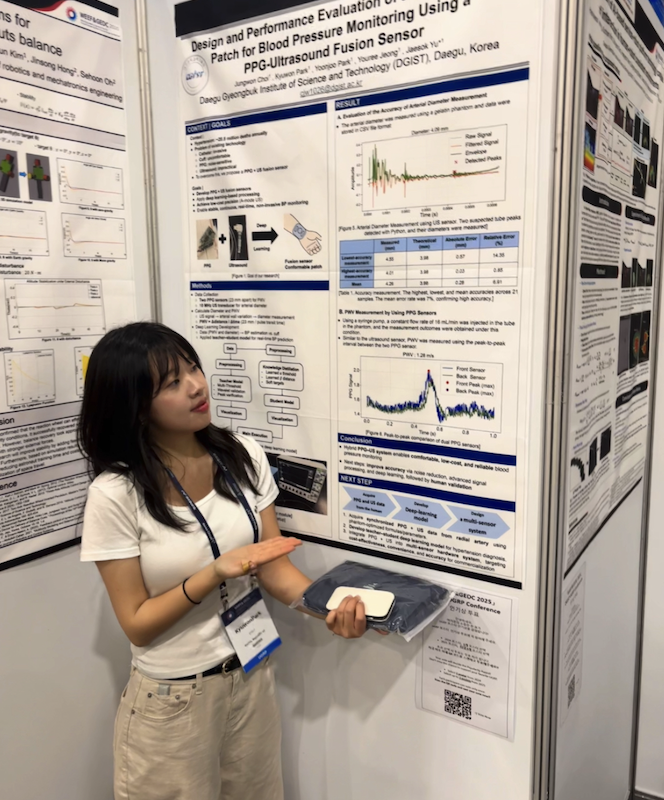
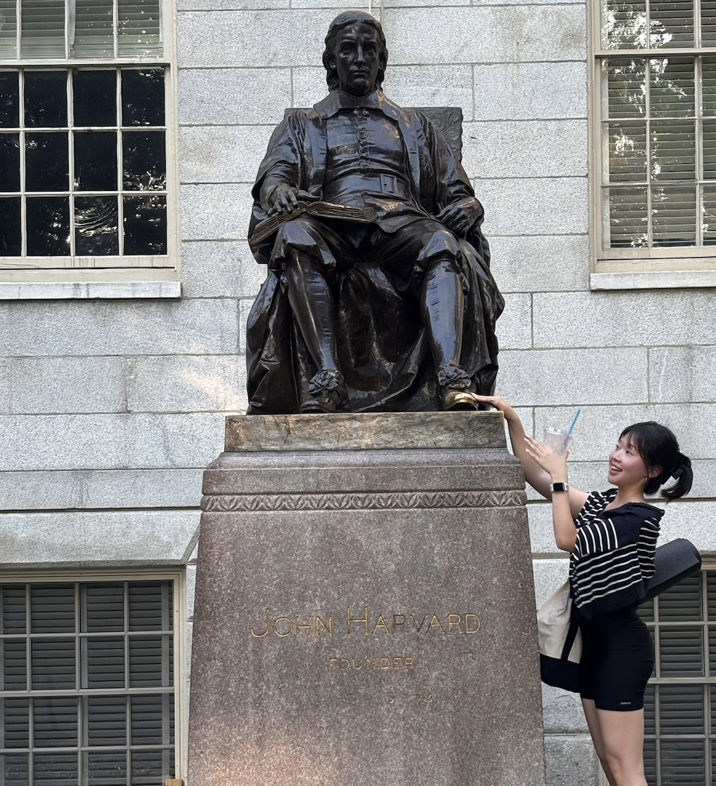
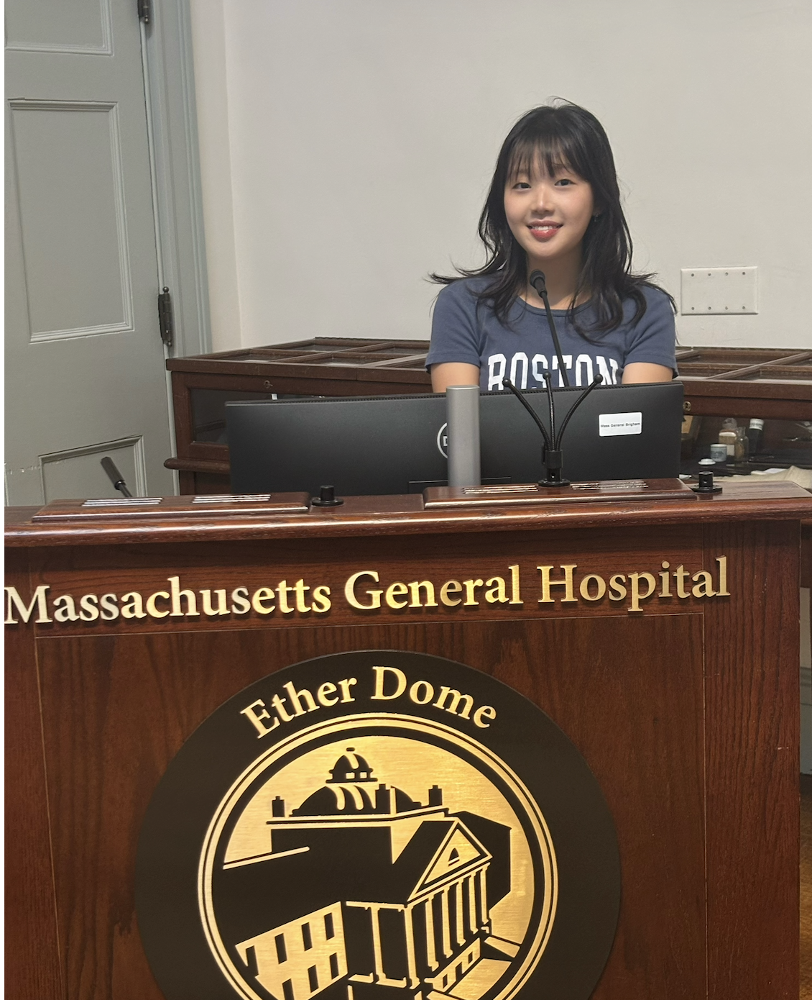
Contact
Open to research collaborations, internships, and anything at the edge of the two threads above.